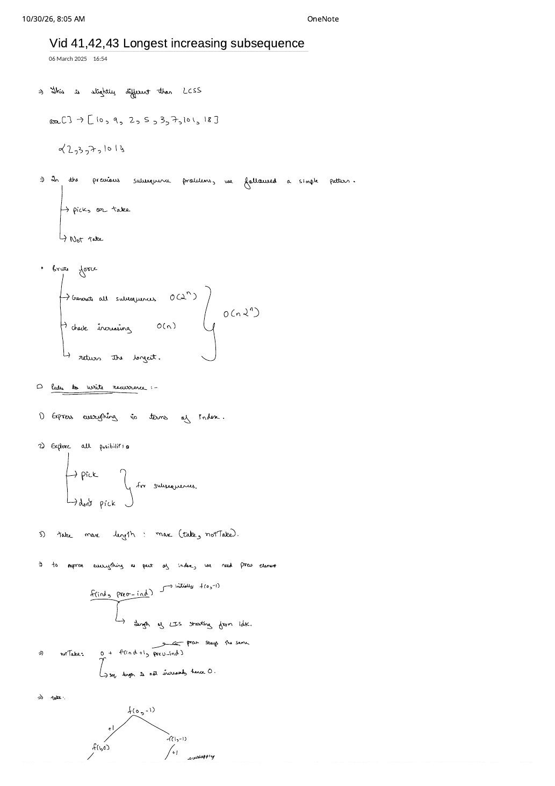
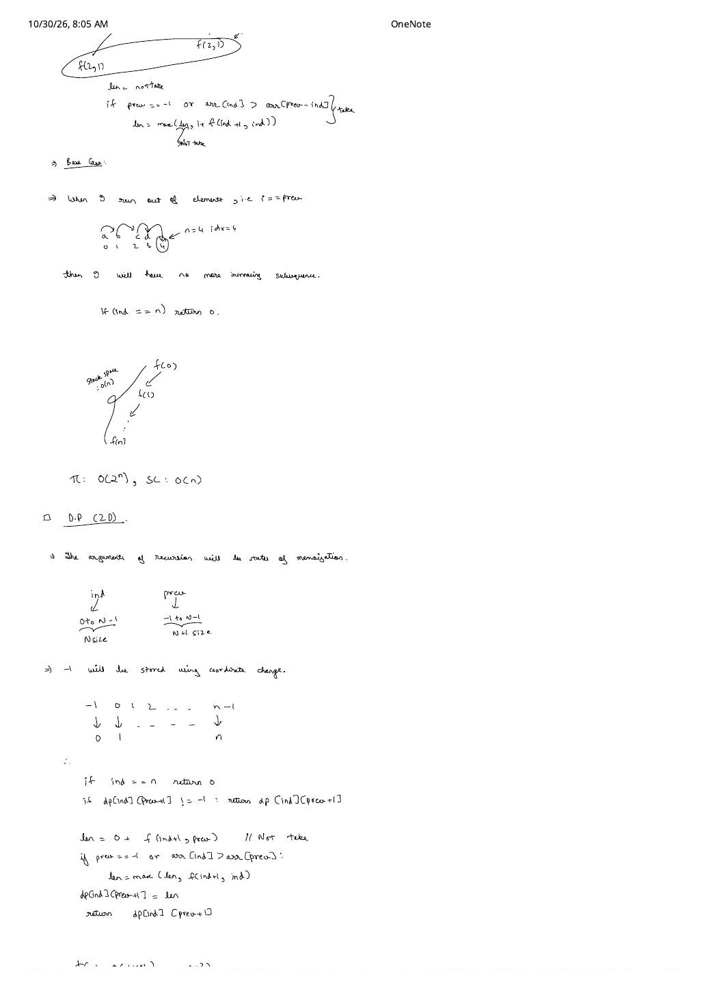
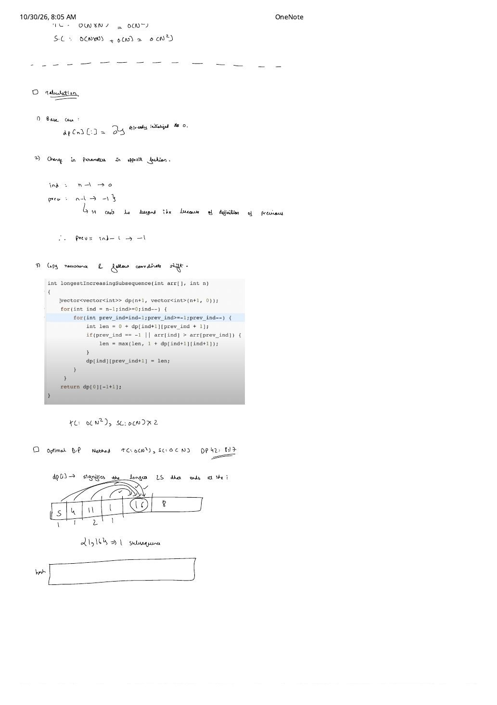

DP 41–43: Longest Increasing Subsequence — 2D Coordinate Shift, Printing LIS & $O(n \log n)$ Binary Search
Expanded from handwritten competitive coding study note: 14_Vid_41_42_43_Longest_increasing_subsequence.pdf
Given an array $\text{arr}[0 \dots n-1]$, find the length (and elements) of its longest strictly increasing subsequence (LeetCode 300). Across Vid 41, Vid 42, and Vid 43, this problem showcases one of the richest algorithmic evolutions in competitive programming: $O(n \cdot 2^n)$ brute force $\to$ $O(n^2)$ coordinate-shifted 2D DP $\to$ $O(n)$-space 1D tabulation with parent-hash reconstruction $\to$ $O(n \log n)$ greedy patience piles with binary search.
1. Brute Force $\to$ 2D Coordinate-Shifted DP (Vid 41, Pages 1–3)
On $\text{arr} = [10, 9, 2, 5, 3, 7, 101, 18]$, generating all $2^n$ subsequences and checking strict monotonicity in $O(n)$ takes $O(n \cdot 2^n)$ time and finds $\{2, 3, 7, 101\}$ (or $\{2, 3, 7, 18\}$) of length $4$. Why can't we write a single-parameter Pick/Not-Pick $f(\text{ind})$? Because we can only pick $\text{arr}[\text{ind}]$ if it is strictly greater than the previously picked element!
- 2D State (p.1): $f(\text{ind}, \text{prev\_ind}) =$ LIS length in suffix $\text{arr}[\text{ind} \dots n-1]$ when the last picked index was $\text{prev\_ind} \in \{-1, 0, \dots, \text{ind}-1\}$ (initial call $f(0, -1)$, base case $f(n, \cdot) = 0$).
- Transitions (p.1–2): $$\text{notTake} = 0 + f(\text{ind} + 1, \text{prev\_ind})$$ $$\text{take} = \begin{cases} 1 + f(\text{ind} + 1, \text{ind}) & \text{if } \text{prev\_ind} == -1 \text{ or } \text{arr}[\text{ind}] > \text{arr}[\text{prev\_ind}] \\ 0 & \text{otherwise} \end{cases}$$
- Coordinate Shift for $\text{prev\_ind} = -1$ (p.2–3): Because $\text{prev\_ind}$ ranges over $[-1, n - 1]$, shift its column coordinate by $+1$ ($-1 \mapsto 0, 0 \mapsto 1, \dots, n-1 \mapsto n$) inside an $(n + 1) \times (n + 1)$ matrix! Watch closely in bottom-up tabulation: when you take $\text{arr}[\text{ind}]$, the new second state is $\text{ind}$, which lives at shifted column
ind + 1!
#include <bits/stdc++.h>
using namespace std;
// Vid 41: Exact C++ 2D Tabulation with +1 coordinate shift from page 3
int lis2DTabulation(const vector<int>& arr) {
int n = (int)arr.size();
vector<vector<int>> dp(n + 1, vector<int>(n + 1, 0)); // dp[n][:] = 0 base case
for (int ind = n - 1; ind >= 0; --ind) {
for (int prev_ind = ind - 1; prev_ind >= -1; --prev_ind) {
int len = 0 + dp[ind + 1][prev_ind + 1]; // notTake
if (prev_ind == -1 || arr[ind] > arr[prev_ind]) {
len = max(len, 1 + dp[ind + 1][ind + 1]); // take (ind shifted by +1!)
}
dp[ind][prev_ind + 1] = len;
}
}
return dp[0][-1 + 1]; // dp[0][0] == f(0, -1); Time O(n^2), Space O(n^2) [or O(n)x2]
}2. 1D Ending-At-$i$ DP & Printing the Actual LIS (Vid 42, Page 3)
Instead of carrying two indices, redefine a direct 1D array $dp[0 \dots n-1]$ where $dp[i]$ signifies the length of the longest increasing subsequence that ends at index $i$ (initialized to $1$ everywhere since $\text{arr}[i]$ alone has length $1$). Simultaneously maintain a predecessor array $\text{hash}[i]$ (initialized to $\text{hash}[i] = i$) recording which previous index $\text{prev} < i$ gave $dp[i]$ its maximum!
Handwritten Dry Run on $\text{arr} = [5, 4, 11, 1, 16, 8]$ (Page 3)
| Index $i$ | $0$ | $1$ | $2$ | $3$ | $4$ | $5$ |
|---|---|---|---|---|---|---|
| $\text{arr}[i]$ | $5$ | $4$ | $11$ | $1$ | $16$ | $8$ |
| $dp[i]$ | $1$ | $1$ | $2$ ($5 \to 11$) | $1$ | $\mathbf{3}$ ★ ($11 \to 16$) | $2$ ($5 \to 8$) |
| $\text{hash}[i]$ | $0$ | $1$ | $0$ | $3$ | $2$ | $0$ |
Maximum length $3$ ends at $\text{lastIndex} = 4$. Following parent pointers $4 \to \text{hash}[4] = 2 \to \text{hash}[2] = 0$ collects $[16, 11, 5]$, which reverses to $[5, 11, 16]$! (This exact pattern also solves Largest Divisible Subset, LC 368 and Longest String Chain, LC 1048.)
// Vid 42: O(n^2) Time, O(n) Space — Computes AND Reconstructs the Exact LIS
vector<int> printLongestIncreasingSubsequence(const vector<int>& arr) {
int n = (int)arr.size();
if (n == 0) return {};
vector<int> dp(n, 1), hash(n);
int maxLen = 1, lastIndex = 0;
for (int i = 0; i < n; ++i) {
hash[i] = i;
for (int prev = 0; prev < i; ++prev) {
if (arr[prev] < arr[i] && 1 + dp[prev] > dp[i]) {
dp[i] = 1 + dp[prev];
hash[i] = prev;
}
}
if (dp[i] > maxLen) {
maxLen = dp[i];
lastIndex = i;
}
}
vector<int> lis;
lis.push_back(arr[lastIndex]);
while (hash[lastIndex] != lastIndex) {
lastIndex = hash[lastIndex];
lis.push_back(arr[lastIndex]);
}
reverse(lis.begin(), lis.end());
return lis;
}3. Optimal $O(n \log n)$ LIS via Binary Search / Patience Sorting (Vid 43)
When $n = 10^5$, $O(n^2)$ exceeds the time limit. Maintain a strictly increasing vector tails where tails[k] is the smallest ending element of any increasing subsequence of length $k + 1$ seen so far:
- Case 1 ($x > \text{tails.back()}$): $x$ extends the longest active chain by $+1$ $\implies$
tails.push_back(x). - Case 2 ($x \le \text{tails.back()}$): Find the first index $\text{idx}$ with $\text{tails}[\text{idx}] \ge x$ via
lower_boundand overwritetails[idx] = x. Lowering the tail of length $\text{idx} + 1$ never reducestails.size(), and strictly makes it easier for future numbers to extend length $\text{idx} + 1$!
| Step | Element $x$ | Binary Search Action | tails[] State |
|---|---|---|---|
| 1–3 | $1, 7, 8$ | Each exceeds top $\implies$ append | $[1, 7, 8]$ |
| 4 | $4$ | lower_bound(4) $\to$ idx $1$ ($7 \to 4$) | $[1, \mathbf{4}, 8]$ |
| 5 | $5$ | lower_bound(5) $\to$ idx $2$ ($8 \to 5$) | $[1, 4, \mathbf{5}]$ |
| 6 | $6$ | $6 > 5 \implies$ append (length $4$) | $[1, 4, 5, \mathbf{6}]$ |
| 7 | $-1$ | lower_bound(-1) $\to$ idx $0$ ($1 \to -1$) | $[\mathbf{-1}, 4, 5, 6]$ |
| 8 | $9$ | $9 > 6 \implies$ append (length $\mathbf{5}$) | $[-1, 4, 5, 6, \mathbf{9}]$ |
Warning: Never Print tails[] Directly as the LIS!
At Step 8 above, tails equals $[-1, 4, 5, 6, 9]$—which is not a valid subsequence of $[1, 7, 8, 4, 5, 6, -1, 9]$ because $-1$ appeared after $4, 5, 6$! tails.size() == 5 is $100\%$ exact (for $[1, 4, 5, 6, 9]$), because replacing $1 \to -1$ never touched the top element $6$. If you need to reconstruct the actual subsequence in $O(n \log n)$, also store tailIndices[k] and set parent[i] = tailIndices[idx - 1] on each insertion (shown below)!
// Vid 43: O(n log n) Length + Optional O(n log n) Exact Subsequence Reconstruction
pair<int, vector<int>> lisBinarySearchWithPrint(const vector<int>& arr) {
int n = (int)arr.size();
vector<int> tails, tailIdx, parent(n, -1);
for (int i = 0; i < n; ++i) {
int pos = (int)(lower_bound(tails.begin(), tails.end(), arr[i]) - tails.begin());
if (pos == (int)tails.size()) {
tails.push_back(arr[i]);
tailIdx.push_back(i);
} else {
tails[pos] = arr[i];
tailIdx[pos] = i;
}
if (pos > 0) parent[i] = tailIdx[pos - 1];
}
vector<int> seq;
for (int cur = tailIdx.empty() ? -1 : tailIdx.back(); cur != -1; cur = parent[cur])
seq.push_back(arr[cur]);
reverse(seq.begin(), seq.end());
return {(int)tails.size(), seq};
}from bisect import bisect_left
def length_of_lis(nums: list[int]) -> int:
tails: list[int] = []
for x in nums:
idx = bisect_left(tails, x) # Use bisect_right if non-decreasing (<=) is allowed!
if idx == len(tails):
tails.append(x)
else:
tails[idx] = x
return len(tails)From the Handwritten Notes
View original handwritten page — Vid 41–43 LIS (Page 1): O(n·2ⁿ) Brute Force & Pick/Not-Pick State f(ind, prev_ind)


14_Vid_41_42_43_Longest_increasing_subsequence.pdf p.1 — Benchmark $[10, 9, 2, 5, 3, 7, 101, 18]$, $O(n \cdot 2^n)$ brute force, and $f(\text{ind}, \text{prev\_ind})$ formulation.View original handwritten page — Vid 41–43 LIS (Page 2): Base Case & +1 Coordinate Shift for 2D Memoization


14_Vid_41_42_43_Longest_increasing_subsequence.pdf p.2 — Overlapping $f(2, 1)$ node, $O(n)$ stack analysis, and mapping $\text{prev} \in [-1, n-1]$ to $[0, n]$.View original handwritten page — Vid 41–43 LIS (Page 3): 2D C++ Tabulation & 1D Ending-At-i Trace on [5, 4, 11, 1, 16, 8]


14_Vid_41_42_43_Longest_increasing_subsequence.pdf p.3 — Complete C++ coordinate-shifted tabulation and Vid 42's 1D $dp[i]$ + hash trace.